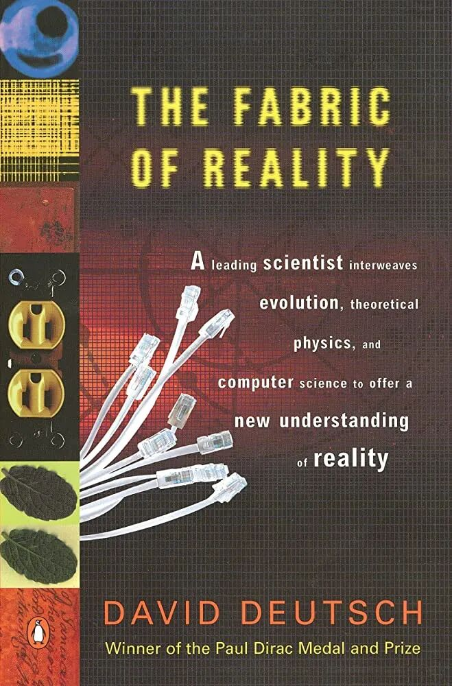

这两天开车从湾区一路去了san diego。路上很无聊，于是配上了一本很枯燥的书：the fabric of reality。
这本书被好几个人推荐过了。我最早看到这本书是在大玩家的blog上，后来Naval也推荐了一次，有一些朋友也强烈推荐。
但是我去听了Naval在Tim Ferris的podcast上对这本书作者David的访谈。感觉这个人一句话颠来倒去的说，没有重点，于是就搁置下了，一直没有读。
这次用Audible一路听这本书，他颠来倒去的特点倒是还不错，让人就算注意力不很集中，也可以听懂。
不过他的书里有的地方的推导实在逻辑链条过长了，光是听脑子都要炸了。回过头来还要重新梳理一遍，才能消化。
这篇笔记就算是第一篇我的整理。主要是写给自己的，顺便也更新一下我久未更新的公众号。
为了更好地认识世界，到底是理论更重要，还是理论的预测更重要
这里可能要说说David在这里讨论的背景。
大家都知道伽利略发现了行星运动的规律，进而给出了一套理论以解释这个规律。
有了这套理论以后，我们就可以预测未来行星的运动轨迹了。
那到底是理论更重要呢？还是理论给我们带来的预测结果更重要呢？
在伽利略这个例子里，当然是理论更重要。
我们可以这么想象。假设有个神级文明给我们留了一个预测机器，可以预测任何行星的未来运动轨迹。但是我们不理解行星运动轨迹背后的原理，这对我们来说有用吗？
当然没用了，就算能预测所有的行星轨迹，没有了理论，我们根本没法根据这个理论去推导出更多别的相关理论，科技根本无法在这个基础上进一步发展，我们也没法对这个世界有更深的认知。
仅仅有预测的结果，是没有用的。我们研究世界，为的不是可以预测一些结果，而是为了掌握能更精确描述这个世界的理论。
理论是怎么来的？是归纳法得来的嘛？
所谓的归纳法，我们可以用一下三体里很有名的那个火鸡与农场主的例子。
农场主每天都来喂火鸡，因此火鸡科学家归纳得出，农场主每天来喂我们，这个是真理。
直到火鸡被宰掉那一天。。。
由这个例子可以理解，为什么归纳法不work。
那我们的理论是怎么来的呢？我们如何找到正确的理论呢？
David认为：大部分理论，都只是当下暂时能找到的最好的解释而已
什么意思？
举个例子。比如一开始人们不懂得重力，后来牛顿发现了三大定律，这就是在那个时候人们对重力能找到的最佳解释，说重力来源于质量的引力。
后来爱因斯坦发现了相对论，说这个引力其实是空间弯曲的结果，更好地解释了引力。
那爱因斯坦的理论是不是就是绝对正确的呢？
不一定，可能之后又出来了一个人，发明了另外一种解释，能更好地解释这个世界的现象。
我们的世界理论大厦就是用一个又一个这样“暂时最好”的解释堆砌起来的。
是不是听上去很不牢靠？
而且有人就会问了，你凭什么说某一个解释比另外一个解释更好呢？我说引力是神创造的，不行吗？
那什么样的解释更好呢？
David认为，好的解释要满足几个条件。
1.要更能被证伪，即有更强的解释力
举个例子，针对行星的运动轨迹，现在有两个解释。
一个说，是由于伽利略的日心说。
一个说，是由于天使在天上移动行星导致的。
这两个解释里，就是日心说更有被证伪性，因为它这套解释，具体说了行星在特定时间必须要在特定位置出现，如果不是就被证伪了。
而天使说则行星无论如何怎么移动，都可以解释，都不能被证伪。
能被证伪有什么好处呢？能被证伪的解释，往往给出了更多的细节。如果我们采用了这种解释，就可以根据这个解释背后的理论推导出更多的解释，我们对世界的理解就能变得更深入。
2. 要更简洁
再举个例子。假设我又提出了一个新日心说，说地球确实是围着太阳转的，但是在世界末日那一天会反过来，太阳会围着地区转。
这个新的理论也可以被证伪。能支持这个理论的证据和日心说一样多。
而我们不采用这套理论，就是因为这个理论相对于日心说来说，多了一些条件，而且这些条件无法被证伪，也无法用于解释任何新的东西。
换言之，它多出来了一些没必要的东西。
满足这样条件的更好解释其实很难找
给我的启示
David的这本书读起来特别枯燥，可能你看了我的笔记也慢慢可以理解了。
他这个书真的一直在说一些很虚的东西。
比如我们这个社会的知识是怎么来的？我们的理论大厦是怎么建立起来的？
不过我觉得这里还是有一些实际可以用的。就是在我们自己在筛选理论的时候，可以用类似的方法论去筛选。
比如对我来说，炒币的时候听到了一个理论。我怎么去看这样的理论呢？
先看看它的理论是不是有解释力，即预测的东西是否很容易被证伪，是不是可以精确地描述一个事情。
再看看它是否简洁。
这样往往可以筛掉大部分似是而非的理论。
今天文章就到这里吧~完